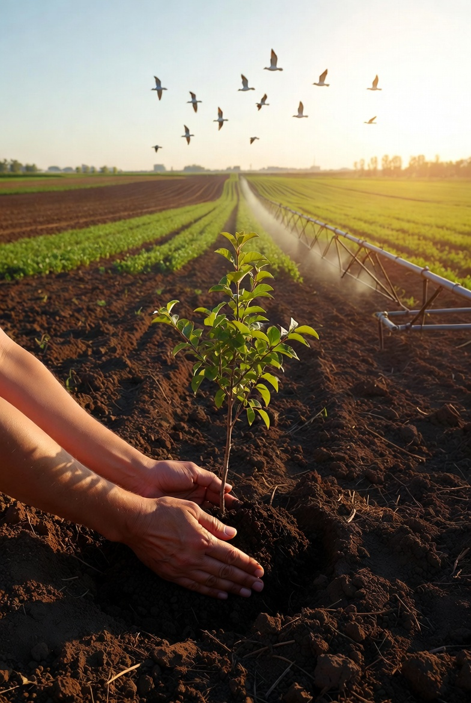

Produção Responsável
Técnicas que aumentam a produtividade respeitando o solo, a água e a biodiversidade local.
Equilíbrio entre produção agrícola e preservação do meio ambiente. O campo que alimenta o mundo também cuida dele.
Municípios atendidos
Estudantes impactados
Anos de história
Edição atual
O Agro Forte nasceu da vontade de mostrar que a agricultura moderna pode — e deve — caminhar lado a lado com a preservação ambiental. Através do programa AGRINHO, levamos conhecimento, tecnologia e consciência ambiental para escolas e comunidades rurais.
Acreditamos que o futuro do agro é forte porque é responsável: produz mais, desperdiça menos e protege o planeta para as próximas gerações.

Técnicas que aumentam a produtividade respeitando o solo, a água e a biodiversidade local.
Uso consciente dos recursos naturais, energia limpa e economia circular no campo.
Drones, sensores e inteligência artificial transformando a lavoura em um ambiente de precisão.
Capacitação de jovens e produtores através de programas como o AGRINHO.